園の方へ
Miralink
はじめての設定ガイド
ログインしてから使いはじめるまでを、1つずつ写真でご案内します。
5つやること（＋あとでも大丈夫が2つ）
30分ほど目安の時間
途中でやめてOK続きから再開できます
やることは、これだけです
- 1ログインして、パスワードを変える3分
- 2契約書を読んで、同意する5分
- 3利用料金の支払い方法を選ぶ3分
- 4園児を登録する10分〜
- 5保護者を未来WAに招待する5分〜
- 6先生のログインを作るあとでも大丈夫3分
- 7保育料のカード払いを始める使う園だけ10分
はじめる前に、手元に用意するもの
ログイン情報の紙ログインID・はじめのパスワード（私たちからお渡ししたもの）
園児と保護者の名簿保護者のメールアドレスも。名簿のひな形（Excel で開ける CSV）は、画面からダウンロードできます
請求書を受け取るメールアドレス事務の方のアドレスなど
終わった手順には、画面で自動的に ✓ が付きます。まちがえても、あとから直せます。安心して進めてください。
1
ログインして、パスワードを変える
お渡しした「ログイン情報の紙」を見ながら入れます。
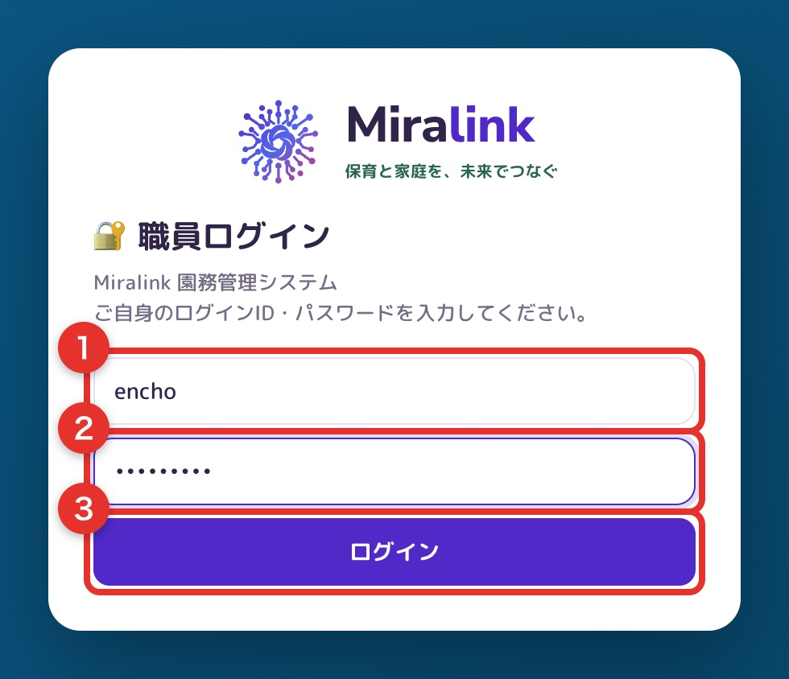
ログインの画面
- 1
ログインIDを入れます。メールアドレスではありません
- 2
パスワードを入れます（はじめのパスワード）
- 3
ログイン を押します
はじめてのときは、パスワードを変えます
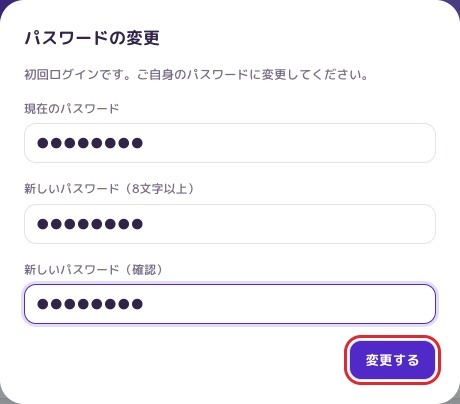
ログインすると、この窓が出ます
- 1
「現在のパスワード」に、はじめのパスワードを入れます
- 2
「新しいパスワード」に、ご自身で決めたものを2回入れます（8文字以上）
- 3
変更する を押します
こう出たら
- ログインIDまたはパスワードが違います
- 大文字・小文字をもう一度お確かめください。
- ログインIDにメールアドレスは使えません
- ブラウザが自動で入れたものです。欄を消して、紙のIDを入れ直してください。
- …15分ほどおいてからお試しください。
- 何度もまちがえると、15分ロックがかかります。少し待ってからもう一度どうぞ。
- どの園に入りますか？
- 同じIDとパスワードが、ほかの園にもあるときだけ出ます。ご自身の園の名前を押してください。
- 8文字以上にしてください
- 新しいパスワードを8文字以上にしてください。
★
あとは「案内の窓」が順番に連れていきます
ログインすると、ホームに案内の窓が開きます。ここから2〜7を進めます。
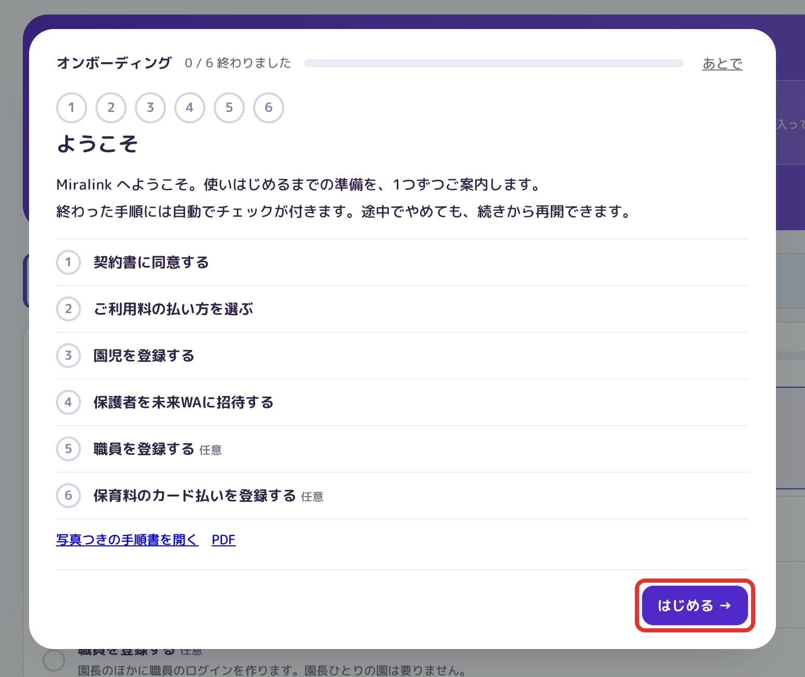
案内の窓（はじめの準備）
- 1
はじめる → を押すと、次の手順へ進みます
- 2
途中でやめたいときは あとで を押します
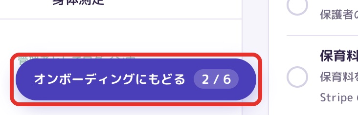
左下のボタンで、いつでも続きから
あとで続けるときは、画面の左下にある はじめの準備にもどる を押してください。終わった手順には ✓ が付いて、続きから始まります。
2
契約書を読んで、同意する
紙のハンコの代わりに、画面で同意します。書類は2つです（利用契約書と覚書）。
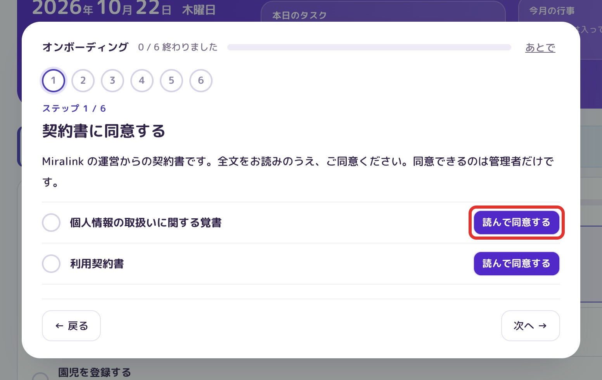
案内の窓の「契約書に同意する」
こう出たら
- 全文を最後まで表示してから同意してください
- 枠の中を一番下までスクロールしてください。
- 確認していない条件があります
- チェックが1つ抜けています。上から見直してください。
- 氏名と役職を入れてください
- 2つとも入れてください。
契約書の画面で
読んで同意する を押すと、契約書の全文が開きます。枠の中を一番下（— ここまで —）までスクロールすると、下の欄が使えるようになります。
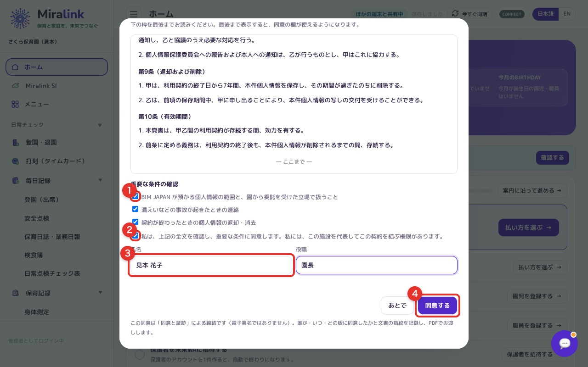
契約書の下の同意欄
- 1
「重要な条件の確認」のチェックをすべて入れます
- 2
「私は、上記の全文を確認し…」にもチェックを入れます
- 3
氏名と役職（例：園長）を入れます
- 4
同意する を押します。もう1つの書類も同じように同意します
メールの確認コード（6けた）の欄が出たときは、確認コードを送る を押し、届いた数字を入れてください（10分以内）。
同意した書類は、PDF で「設定 › 契約」から取り出せます。
3
利用料金の支払い方法を選ぶ
Miralink の毎月の利用料金を、どう支払うかを決めます。案内の窓の中で、そのまま登録できます。
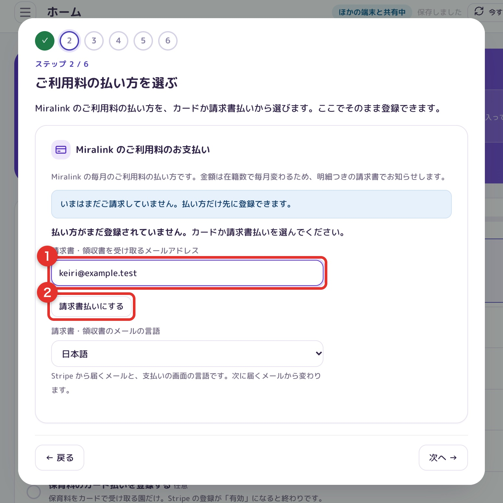
案内の窓の「利用料金の支払い方法を選ぶ」
- 1
請求書・領収書を受け取るメールアドレスを入れます
- 2
支払い方法を選びます。
請求書払いにする … 毎月メールで請求書が届き、銀行振込かカードで払います（期限は14日）
カードを登録する … カードの画面が開きます。登録すると毎月自動で払われます
メールを英語で受け取りたいときは、「請求書・領収書のメールの言語」で English を選べます。
こう出たら
- メールアドレスの形式が正しくありません
- 「@」の前後や、ドットの位置をお確かめください。
4
園児を登録する
案内の窓の 生徒情報で登録する → を押すと、生徒一覧が開きます。1人ずつでも、名簿からまとめてでも入れられます。
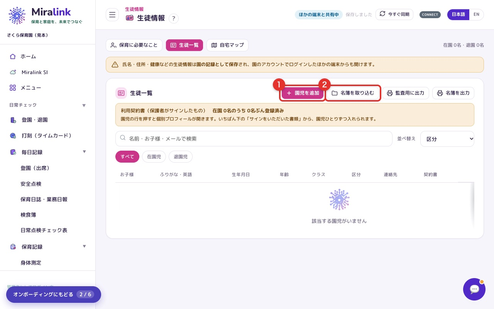
生徒情報 › 生徒一覧
- 1
園児を追加 … 1人ずつ入れるとき
- 2
名簿を取り込む … ひな形（Excel で開ける CSV）でまとめて入れるとき
1人ずつ入れる
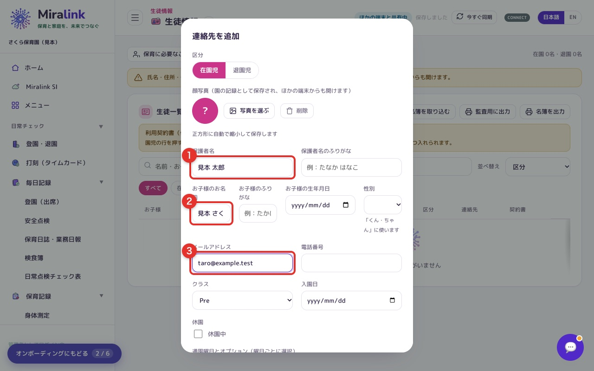
「連絡先を追加」の窓
- 1
保護者名を入れます（必ず）
- 2
お子様のお名前を入れます
- 3
保護者のメールアドレスを入れます（必ず。5で未来WAに招待するときに使います）
- 4
クラス・生年月日などを入れて、一番下の 保存 を押します
名簿からまとめて入れる
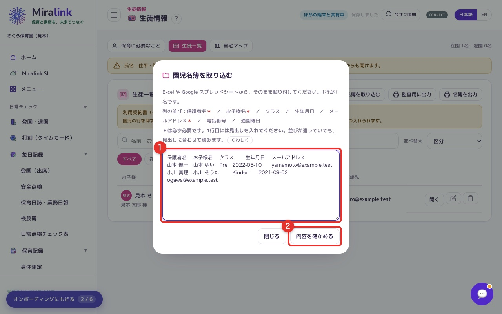
「園児名簿を取り込む」の窓
- 1
ひな形（CSV）をダウンロード を押します
- 2
ダウンロードしたファイルを Excel で開き、1行に1人ずつ入れます。列は「園児を追加」の欄と同じ並びです（＊は必ず）。見出しの行は変えないでください。2行目の「（例）」の行は消さなくても読み飛ばします。保存するときは「CSV UTF-8（コンマ区切り）」を選びます
- 3
CSVファイルを選ぶ を押して、保存したファイルを選びます
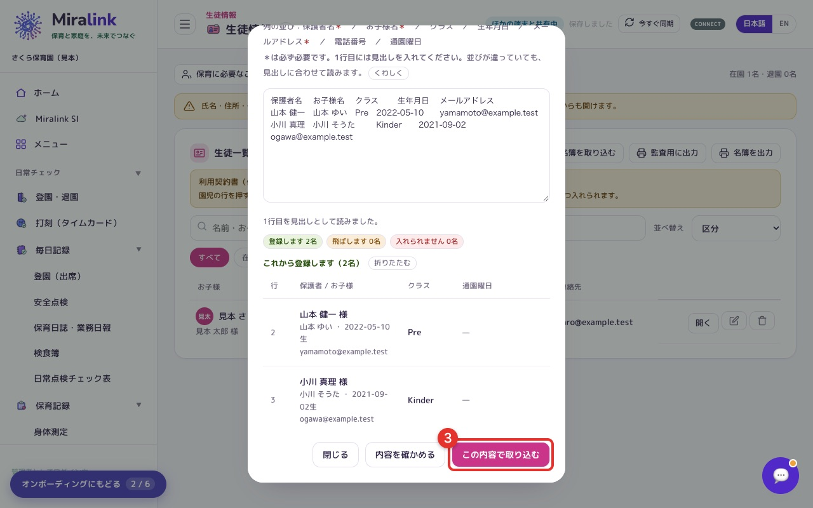
中身を確かめてから取り込みます
- 4
「登録します／飛ばします／入れられません」の人数を確かめて、この内容で取り込む を押します
在園の園児が1人入ると、この手順に ✓ が付きます。
こう出たら
- 在園児はメールアドレスが必須です
- 保護者のメールアドレスを入れてください。
- 見出しの行が、ひな形と違います
- ひな形をダウンロードし直して、見出しの行は変えずに入れてください。
- 性別は「男の子」か「女の子」で入れてください
- 性別の列は「男の子」「女の子」のどちらかにしてください（空でもかまいません）。
- 生年月日を読み取れません
- 2022-06-18 の形で入れてください。
5
保護者を未来WAに招待する
保護者が使うアプリ「未来WA」に入るための、メールアドレスとパスワードを作ります。案内の窓の 保護者を招待する → を押すと、この画面が開きます。
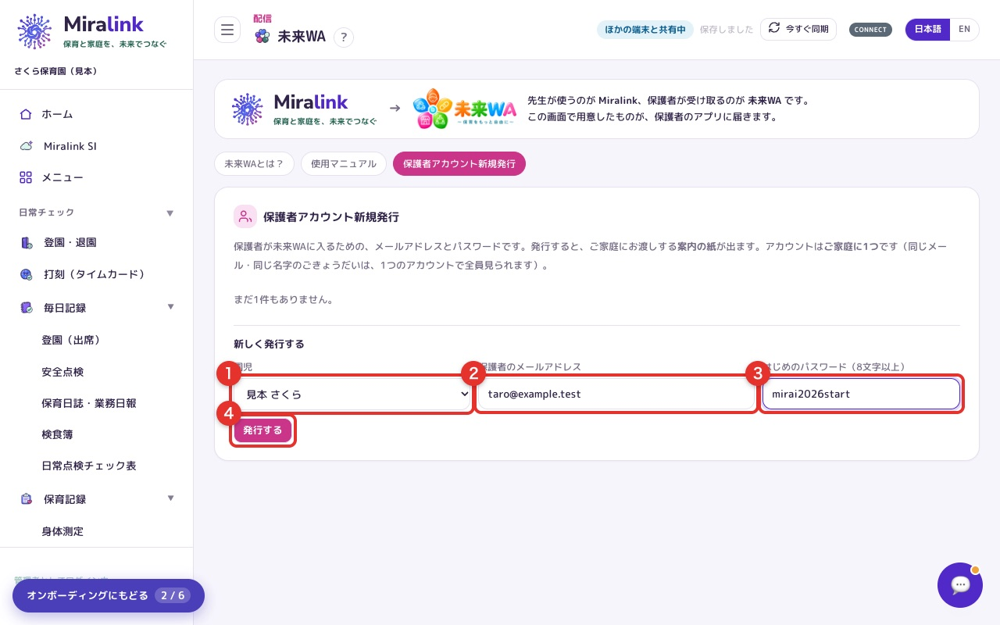
配信 › 未来WA › 保護者アカウント新規発行
- 1
園児を選びます
- 2
保護者のメールアドレスを入れます
- 3
はじめのパスワードを決めて入れます（8文字以上）
- 4
発行する を押します
「ご利用案内」の紙を、保護者にお渡しします
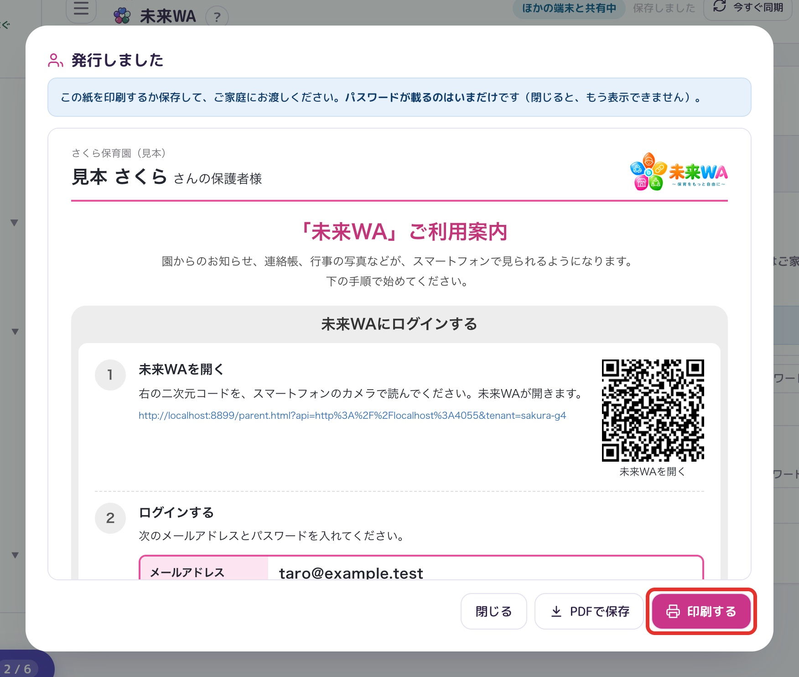
発行すると、案内の紙が出ます
印刷する（または PDFで保存）で、紙にしてお渡しください。QRコード・メールアドレス・はじめのパスワードが載っています。
パスワードが紙に載るのは、このときだけです。あとで出し直す紙には載りません。
きょうだいは、同じメールアドレス・同じ名字なら1つのアカウントでまとめて見られます。
保護者のアカウントが1件できると、この手順に ✓ が付きます。
こう出たら
- このメールアドレスはすでに登録されています
- きょうだいなどで、もう作ってあります。一覧をお確かめください。
- パスワードは8文字以上にしてください
- はじめのパスワードを8文字以上にしてください。
6
先生のログインを作る あとでも大丈夫
園長のほかに使う先生がいるときだけ。案内の窓の 職員アカウントを作る → から「設定 › 職員アカウント」が開きます。
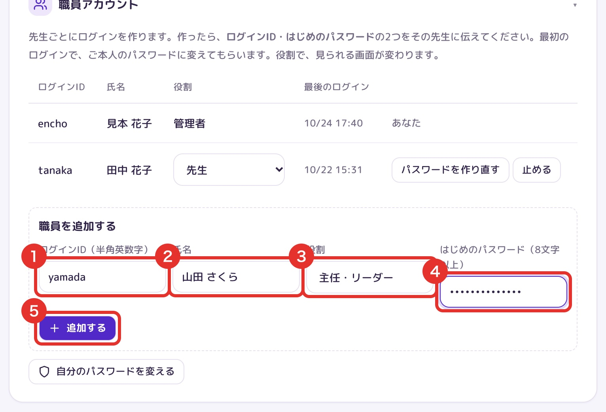
設定 › 職員アカウント
- 1
「職員を追加する」に、ログインID（半角英数字）・氏名・役割・はじめのパスワードを入れます
- 2
追加する を押します
- 3
その先生に ログインID・はじめのパスワード の2つを伝えます。最初のログインで、ご本人のパスワードに変えてもらえます
役割は4つ：管理者／園長／主任・リーダー／先生。役割で、見られる画面が変わります。
7
保育料のカード払いを始める 使う園だけ
保護者から保育料をカードで受け取る園だけ。案内の窓の 請求書作成で登録する → から開きます。
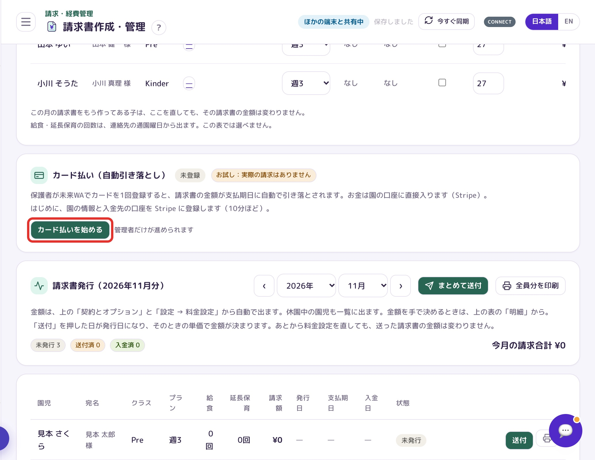
請求書作成・管理 › カード払い（自動引き落とし）
- 1
カード払いを始める を押すと、決済会社（Stripe）の登録画面が開きます
- 2
園の情報と、入金先の口座を入れます（10分ほど）
登録が「有効」になると、この手順に ✓ が付きます。
✓
準備ができました
必要な手順に ✓ が付いたら、準備はおしまいです。おつかれさまでした。
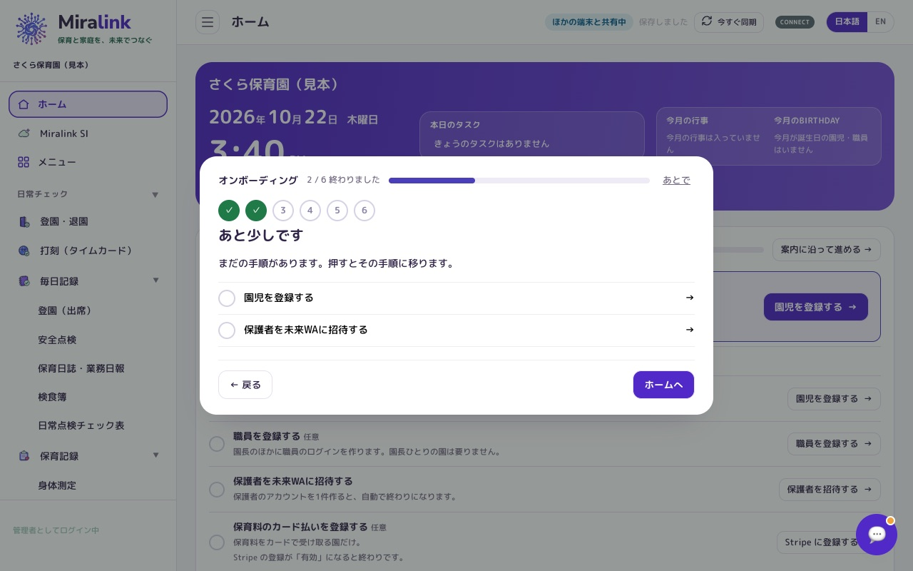
案内の窓の最後の画面
わからなくなったら
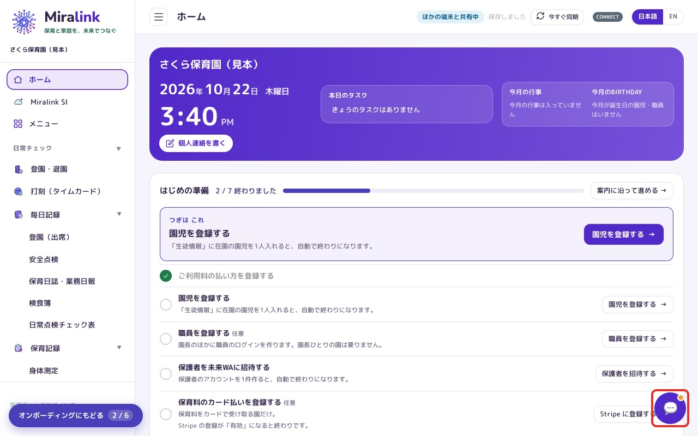
右下の丸いボタン
画面の右下の丸いボタンを押すと、使い方を聞けます。
人に聞きたいときは、こちらへどうぞ。
【お問い合わせ先：確認中】